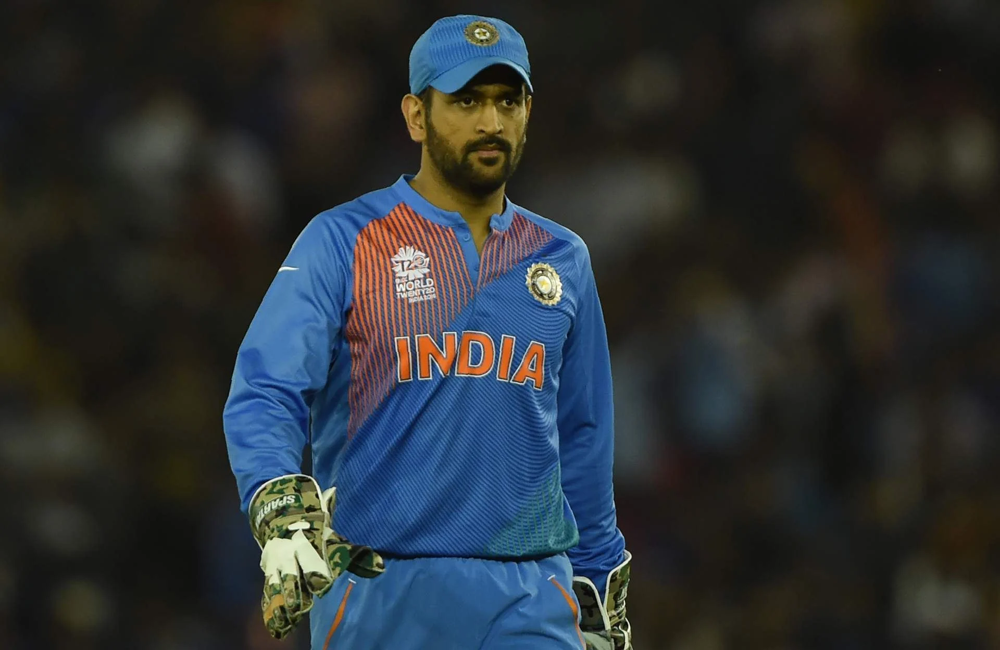
INDUCTED: 2025 | CAREER: 2004 - 2019
MS
DHONI
INDIA
MS Dhoni
- 🧢 Captain Cool | Finisher | Legend
- 🏆 Won all 3 ICC trophies
(T20 WC 2007, ODI WC 2011, Champions Trophy 2013) - 🥇 Padma Bhushan, Padma Shri, Khel Ratna awardee
- Most stumpings in international cricket
- 🏏 10,000+ ODI runs at avg. 50+
- 🏆 5× IPL Champion with CSK
- 🧠 Led India to #1 in Test Rankings
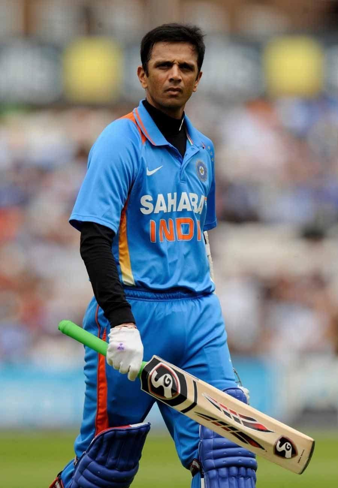
INDUCTED: 2025 | CAREER: 2004 - 2019
RAHUL
DRAVID
INDIA
Rahul Dravid
- 🧱 The Wall | Gentleman of Cricket
- 🏏 13,000+ Test runs, 10,000+ in ODIs
- 🧱 Most balls faced & most time spent at the crease in Tests
- 🧤 Most Test catches by a non-wicketkeeper (210)
- 🌍 Only player to score a century in all Test-playing nations
- 🏆 Led India to U-19 World Cup win (2018) as coach
- 🥇 Padma Bhushan, Padma Shri, Khel Ratna nominee
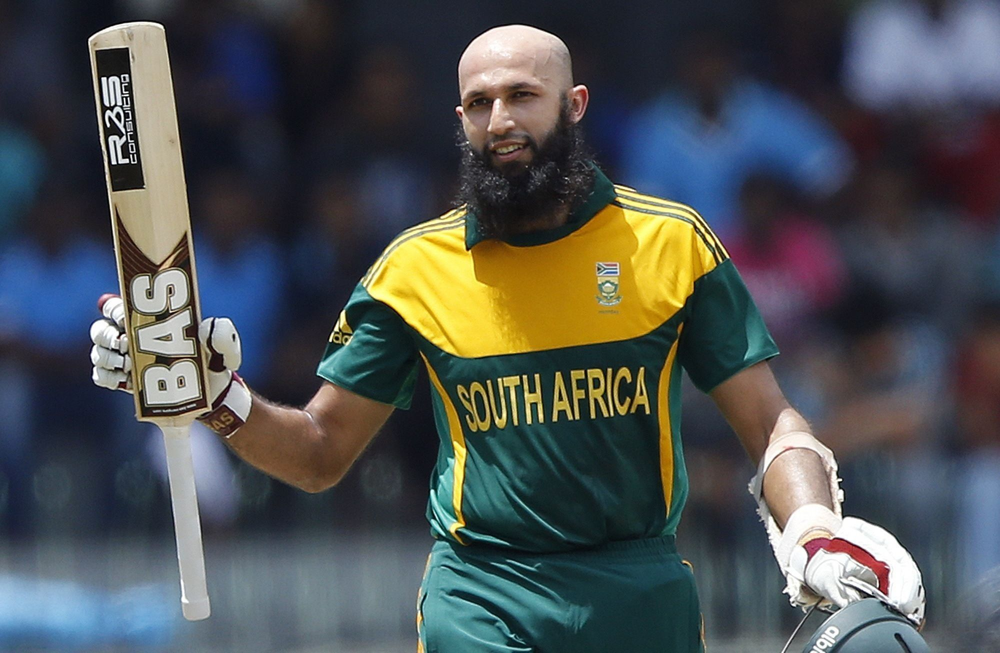
INDUCTED: 2025 | CAREER: 2004 - 2019
HASHIM
AMLA
SOUTH AFRICA
HASHIM AMLA
- Silent Warrior | Elegant Stroke Maker
- 💯 Triple century in Tests (311)* – South Africa’s highest
- 🏏 9,000+ ODI runs, fastest to 2000, 3000...7000 runs
- 💯 28 Test & 27 ODI centuries
- 🎯 First South African to score a Test triple century
- 🏆 ICC ODI Player of the Year 2010 🧢 Former SA Test captain
- 🕊 Known for humility, class, and consistency
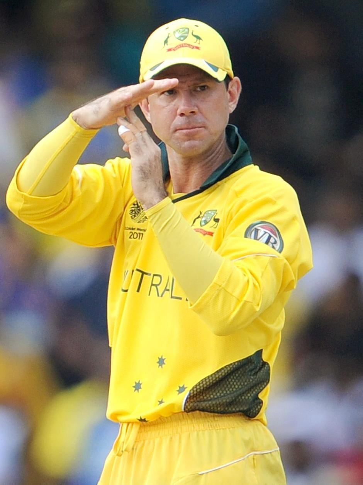
INDUCTED: 2018 | CAREER: 1995 - 2012
RICKY
PONTING
AUSTRALIA
Ricky Ponting
- 🔥 Punter | Master Captain | Aussie Legend
- 🏆 3× World Cup Winner (1999, 2003, 2007), 2× as captain
- 🏏 13,000+ runs in both Tests and ODIs
- 🧢 Most successful captain in international cricket (230+ wins)
- 💯 71 international centuries (3rd highest after Sachin & Kohli)
- 🥇 ICC Cricketer of the Decade (2000s)
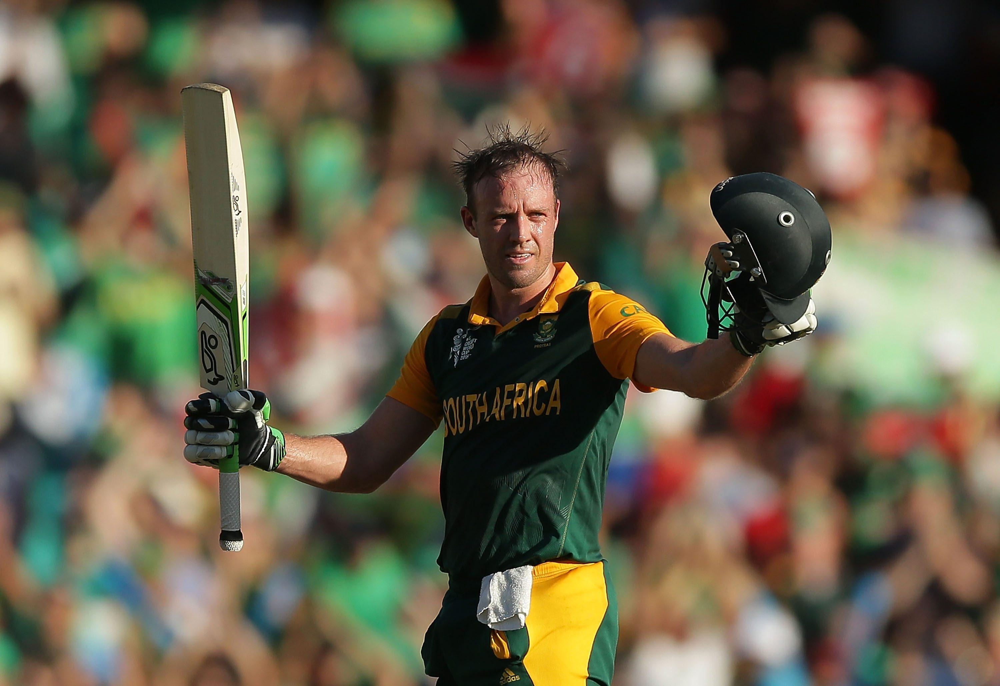
INDUCTED: 2024 | CAREER: 2004 - 2018
AB
de VILLIERS
SOUTH AFRICA
AB de Villiers
- ⚡ Mr. 360° | Superhuman Batsman
- 🏏 Fastest 50, 100 & 150 in ODI history
- 💯 25 ODI & 22 Test centuries
- 🌍 Known for 360° shot-making & innovation
- 🧢 Former South African captain in all formats
- 🏆 ICC ODI Player of the Year (2010, 2014, 2015)
- 🔥 Scored 149 off 44 balls – fastest 100 ever
- 🧠 One of cricket’s most loved and feared finishers
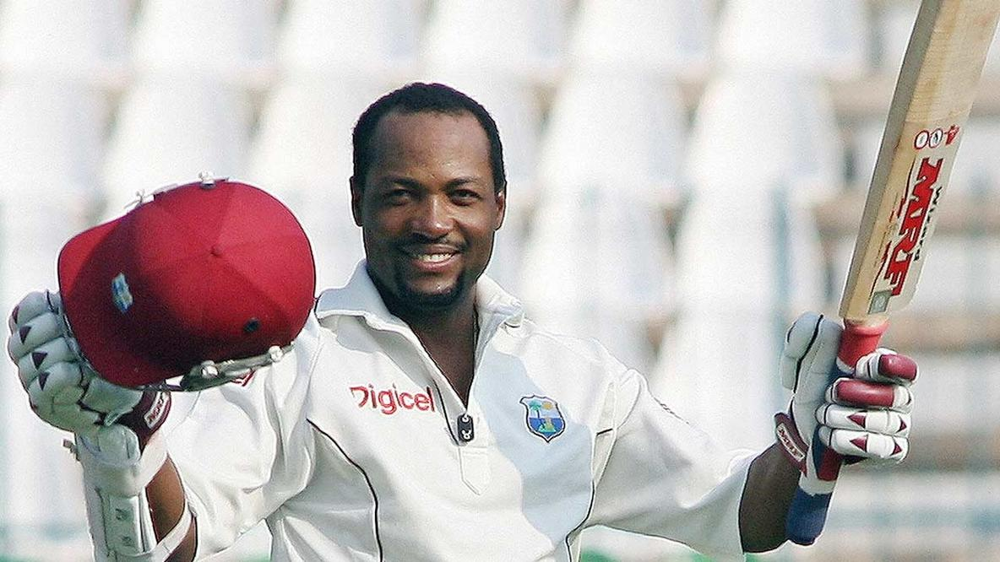
INDUCTED: 2012 | CAREER: 1990 - 2007
BRIAN
LARA
WEST INDIES
Brian Lara
- 🎯 The Prince of Trinidad | Batting Genius
- 🏏 400 – Highest individual score* in Test history
- 🏏 501 in first-class* – Highest score in any professional match
- 💯 34 Test & 19 ODI centuries
- 🥇 Only player with two 375+ scores in Tests
- 🌍 Scored runs against every top team, often in tough situations
- 🏆 Wisden Cricketer of the Year & multiple ICC honors
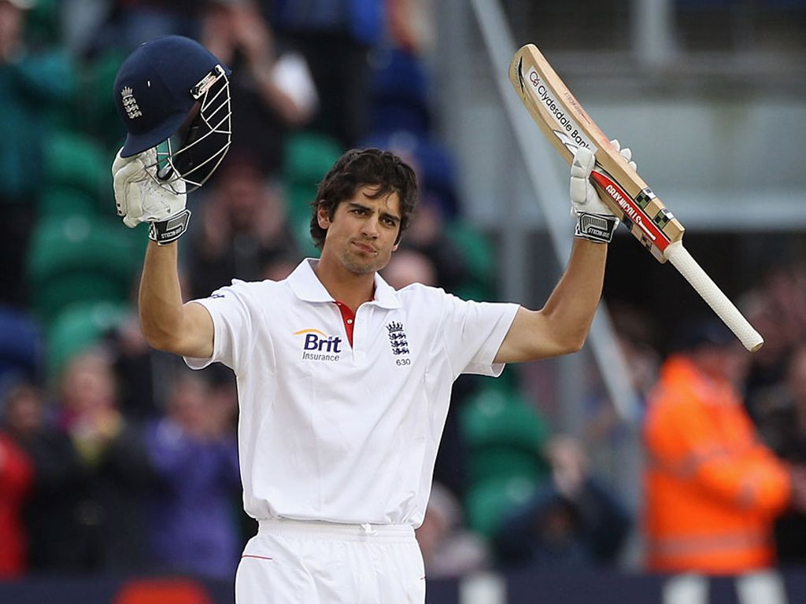
INDUCTED: 2024 | CAREER: 2006 - 2018
ALAISTAR
COOK
ENGLAND
ALASTAIR COOK
- Chef of Runs | England’s Batting Rock
- 👑 Highest Test run-scorer for England – 12,472 runs
- 💯 33 Test centuries – most by an English player
- ⏳ Played 161 consecutive Tests – a world record
- 🧢 Youngest to 10,000 Test runs
- 🏆 Led England to Ashes wins (2010–11, 2013, 2015)
- 🥇 Knighted (Sir Alastair Cook) for services to cricket

INDUCTED: 2022 | CAREER: 1977 - 1993
ABDUL
QADIR

PAKISTAN
Abdul Qadir
- 🌀 Wizard of Spin | Leg-Spin Pioneer
- 🎯 Pioneered leg-spin revival in the 1980s
- 🏏 236 Test wickets in an era dominated by pacers
- 🎩 Known for his mystery variations – googlies, flippers, and topspinner
- 🌍 Praised by legends like Shane Warne & Imran Khan
- 🏆 Best bowling in a Test innings vs England – 9/56 (1987)
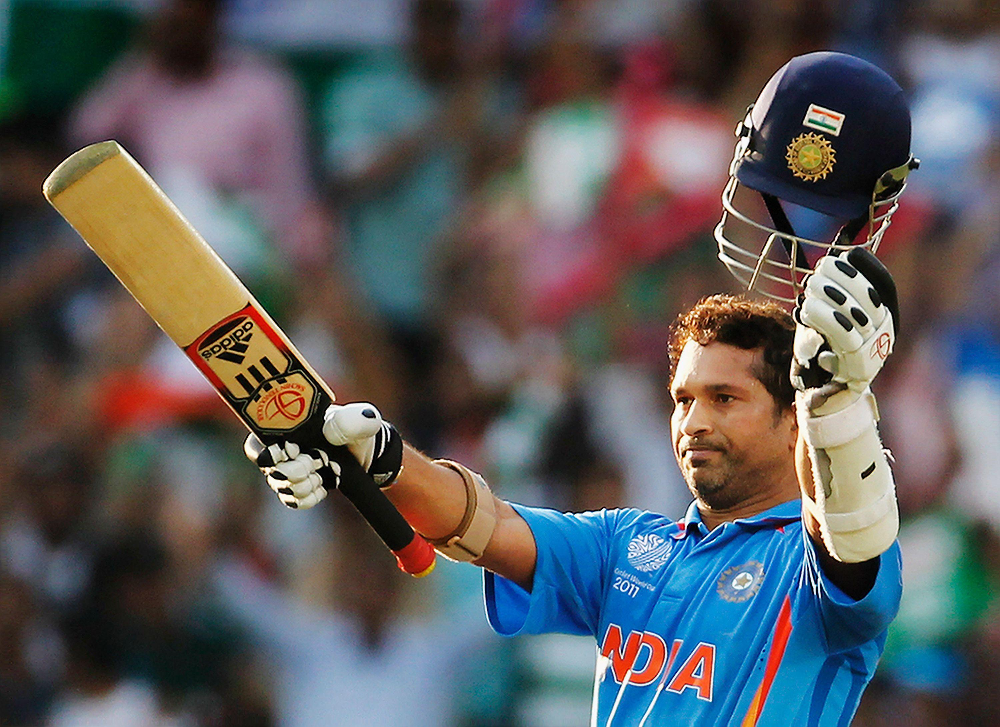
INDUCTED: 2019 | CAREER: 1989 - 2013
SACHIN
TENDULKAR
INDIA
Sachin Tendulkar
- 🏏 Master Blaster | God of Cricket
- 🏆 World Cup Winner (2011), played international cricket for 24 years
- 👑 100 international centuries (most ever)
- 🏏 34,000+ international runs – highest in cricket history
- 💯 Most runs in World Cups
- 🥇 Bharat Ratna, Padma Vibhushan, Khel Ratna
- 🕊 First active cricketer to receive India’s highest civilian award
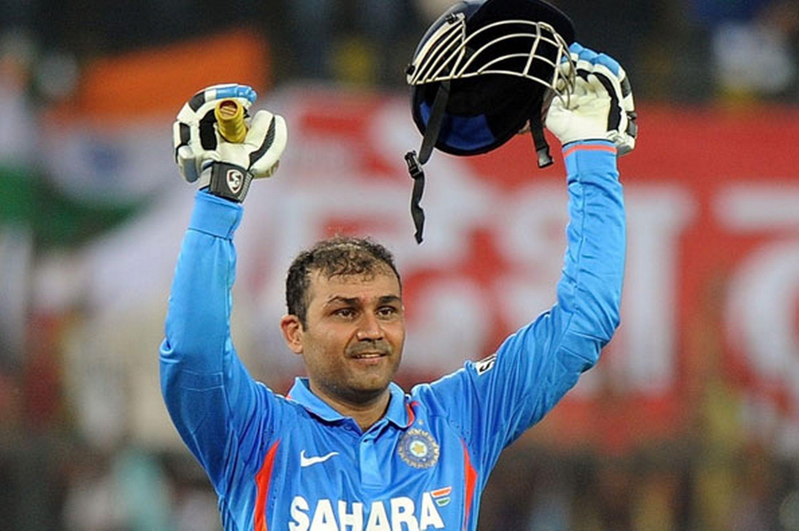
INDUCTED: 2023 | CAREER: 1995- 2015
VIRENDER
SEHWAG
INDIA
Virender Sehwag
- 🔥 Sultan of Multan | Fearless Opener
- 💯 2× Triple Centuries in Tests (319 & 309)
- 🏏 First Indian to score 300+ in a Test
- ⚡ Fastest 300 in Test history (278 balls)
- 🏆 Key part of 2007 T20 WC & 2011 ODI WC winning teams
- 💥 Fastest ODI double century (219 in 149 balls)
- 💯 8,000+ Test runs, 8,000+ ODI runs
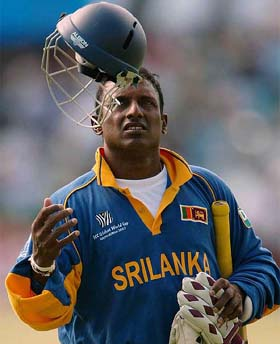
INDUCTED: 2023 | CAREER: 1984 - 2003
ARAVINDA
de SILVA
SRI LANKA
Aravinda de Silva
- 🔥 Sri Lanka’s First Batting Maestro
- 🏆 1996 World Cup winner – starred in final with 107 & 3 wickets*
- 💯 Only player to score a century & take 3 wickets in a WC final
- 🏏 6,000+ Test & 9,000+ ODI runs
- 💥 Known for elegant and fearless strokeplay
- 🧢 Former Sri Lankan captain and team mentor
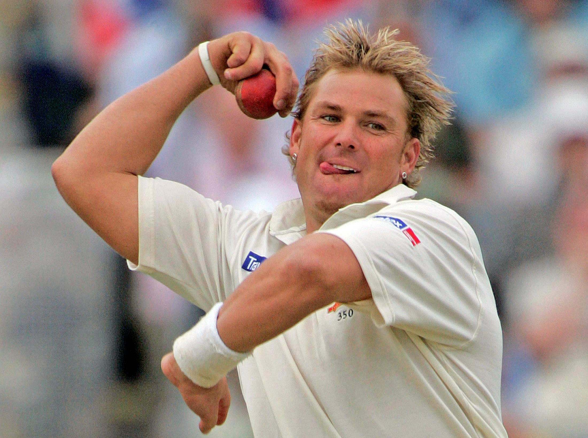
INDUCTED: 2013 | CAREER: 1992 - 2007
SHANE
WARNE
AUSTRALIA
Shane Warne
- 🌀 King of Spin | Cricket Magician
- 🎯 708 Test wickets – 2nd highest in history at retirement
- 🏆 Key in Australia’s World Cup win (1999) – Man of the Match in Final
- 🧠 Revolutionized leg-spin bowling in the modern era
- 🔁 Famous for the “Ball of the Century” (vs Mike Gatting, 1993)
- 🏏 First bowler to 700 Test wickets